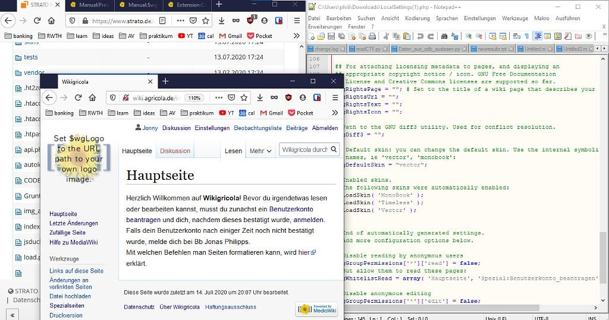

Recent Work

Private MediaWiki
I have set up a private MediaWiki with the "Confirm Account" extension. A nice example of powerful software that is free and open source!

Website for student assosiation
For the first time I have built a website with wordpress. Super simple workflow, it was a lot of fun and I learned a lot.